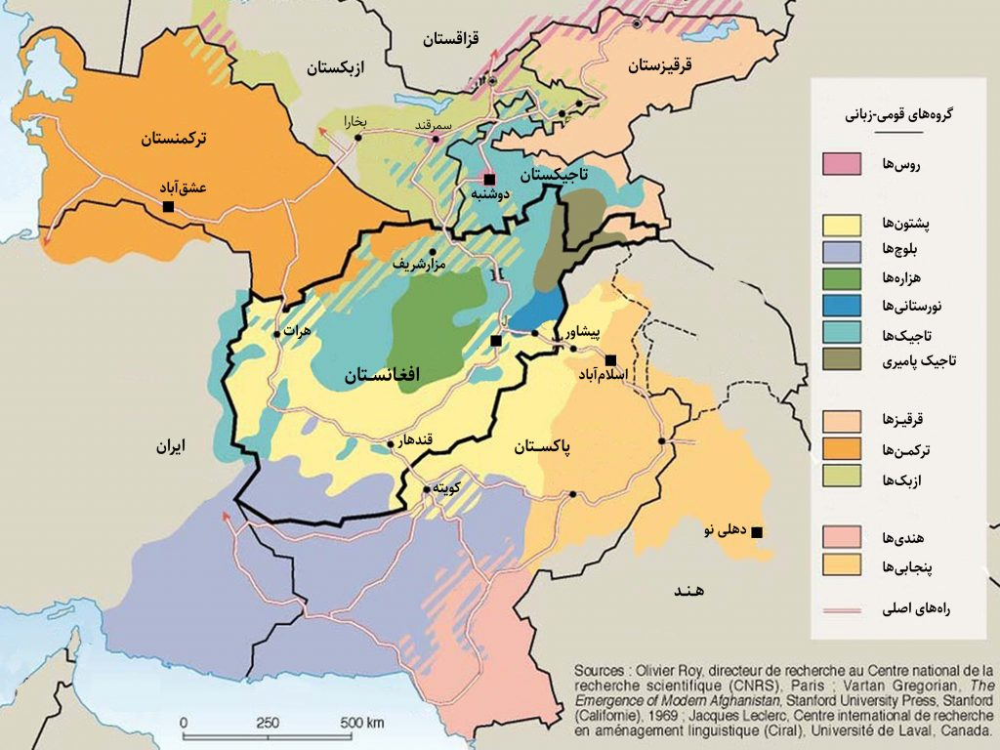

covering the whole of afghanistan

Sure, here's a comprehensive overview of painting websites in English:Painting websites serve as platforms for artists to showcase their work , connect with potential buyers, and engage with fellow artists and art enthusiasts. These websites often offer various features such as galleries, artist profiles, online marketplaces, tutorials, forums, and social networking capabilities.One of the most popular painting websites is DeviantArt, which boasts a vast community of artists across different mediums, including painting. Artists can create profiles, upload their artwork, join groups, and participate in contests and challenges. DeviantArt also offers a marketplace where artists can sell prints of their work.Another notable painting website is Saatchi Art, which focuses on connecting artists directly with buyers. Artists can create profiles, upload their paintings for sale, and reach a global audience of art collectors. Saatchi Art also offers curated collections and personalized recommendations for buyers.For those interested in learning painting techniques, websites like ArtTutor provide a wealth of tutorials and resources. Members can access video tutorials, step-by-step guides, and interactive lessons covering various painting styles and subjects.ArtStation is another popular platform, particularly among digital artists, but it also features traditional painting. It serves as a portfolio website where artists can showcase their work, connect with industry professionals, and find job opportunities in the art and entertainment industries.Painting websites cater to artists of all skill levels and styles, providing a space for creativity, collaboration, and commerce within the art community. Whether you're a beginner looking to learn new techniques or a seasoned artist seeking exposure and sales, these websites offer valuable resources and opportunities for growth and connection. of tutorials and resources. Members can access video tutorials, step-by-step guides, and interactive lessons covering various painting styles and subjects.ArtStation is another popular platform, particularly among digital artists, but it also features traditional painting. It serves as a portfolio website where artists can showcase their work, connect with industry professionals, and find job opportunities in the art and entertainment industries.Painting websites cater to artists of all skill levels and styles, providing a space for creativity, collaboration, and commerce within the art community. Whether you're a beginner looking to learn new techniques or a seasoned artist seeking exposure and sales, these websites offer valuable resources and opportunities for growth and connection.